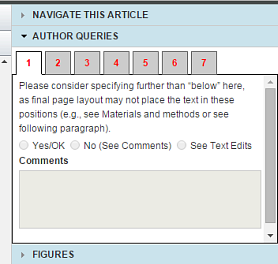

Before you, as author, can submit the article, you must respond to all queries in the Author Queries widget.

Click a numbered tab, and ArticleExpress takes you to that query.
You can respond in one of three ways:
Author Queries.htm | Copyright © 2015 Dartmouth Journal Services All Rights Reserved.